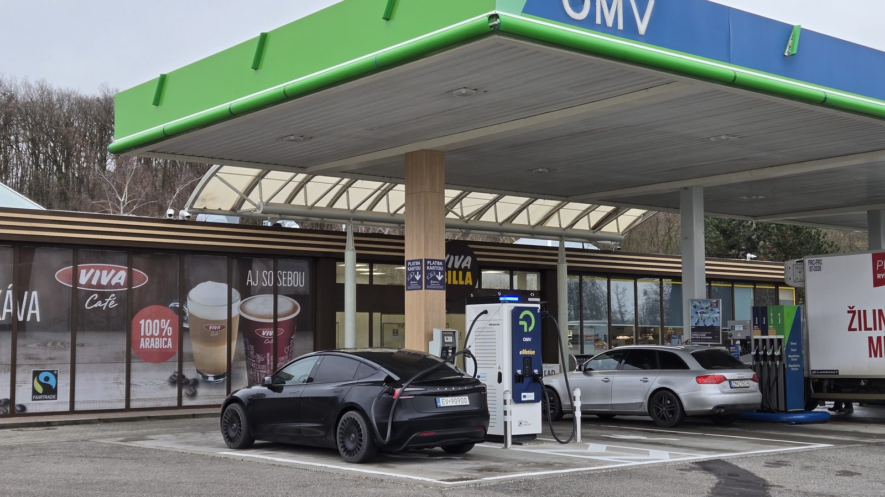

Koľko zastávok počítať
Príklad pre auto s batériou okolo 75 kWh a letnou spotrebou na diaľnici okolo 21 kWh na 100 km:
- s plnou batériou odjazdíte na prvú zastávku okolo 300 km a prídete s rezervou 10 %,
- na rýchlonabíjačke dobijete z 10 na 80 % za 20 až 30 minút, čo stačí na ďalších zhruba 250 km,
- do Splitu tak potrebujete dve zastávky, s rozumnou rezervou tri.
Čistá jazda trvá podľa trasy osem až deväť hodín. Elektromobil k tomu pridá zhruba hodinu až hodinu a pol na nabíjanie. Kto by na tak dlhej ceste aj tak zastavil na obed a dve kávy, stratí oproti spaľovaciemu autu málo alebo nič.
Dve kratšie zastávky sú rýchlejšie ako jedna dlhá. Batéria sa najrýchlejšie nabíja medzi 10 a 60 %. Nad 80 % nabíjanie výrazne spomalí. Tesla navyše na vyťažených Superchargeroch účtuje poplatok za obsadenie, ak nabíjate nad 80 %, aby sa skrátili rady. Bežne je to 0,50 € za minútu, po piatich minútach tolerancie.
Trasa a poplatky
Z Bratislavy vedú k chorvátskemu pobrežiu dve bežné trasy:
- Cez Maďarsko a hraničný priechod Letenye – Goričan do Záhrebu. Stačí jedna maďarská diaľničná známka.
- Cez Rakúsko a Slovinsko, okolo Grazu a Mariboru do Záhrebu. Treba rakúsku aj slovinskú známku, trasa býva o niečo drahšia.
V Chorvátsku sa za diaľnice platí mýto podľa úsekov pri výjazde, známka sa nekupuje.
Od 1. marca 2027 má Chorvátsko prejsť na mýto bez rámp (systém Crolibertas). Kamery budú snímať evidenčné čísla a mýto sa zaplatí cez zariadenie ENC alebo cez vopred zaregistrované evidenčné číslo s platobnou kartou. Kto nebude zaregistrovaný, zaplatí mýto aj pokutu 120 €. Presný postup pre zahraničných vodičov ešte zverejnia, pred cestou v roku 2027 si ho preto overte. Na ceste zo Záhrebu do Splitu po diaľnici A1 je viacero odpočívadiel s rýchlonabíjačkami.
Kde nabíjať po ceste
Na trase nájdete rýchlonabíjačky viacerých sietí. V Rakúsku, Slovinsku aj Chorvátsku je rozšírená sieť IONITY a Tesla Supercharger, ktoré sú na mnohých staniciach otvorené aj pre iné značky. V Chorvátsku má vlastnú sieť ELEN štátna energetická spoločnosť HEP, v Maďarsku nabíjate napríklad na staniciach MOL Plugee.
Konkrétne stanice si naplánujte vopred v aplikácii ABRP (A Better Route Planner) alebo v navigácii auta. V aplikácii PlugShare uvidíte hodnotenia a skúsenosti ďalších vodičov, napríklad či stanica v posledných dňoch fungovala.
Platba v zahraničí
Nové rýchlonabíjačky v EÚ musia od apríla 2024 umožniť platbu platobnou kartou bez registrácie a cenu za kWh zobraziť ešte pred začatím nabíjania. Do roku 2027 to musia doplniť aj staršie stanice nad 50 kW na hlavných európskych ťahoch. Platba kartou bez registrácie však býva najdrahšia.
Pred cestou si preto:
- nainštalujte aplikácie sietí, ktoré budete na trase používať, a zaregistrujte sa doma, nie na odpočívadle,
- overte, či vaša domáca sieť ponúka roaming v krajinách na trase a za akú cenu,
- do zahraničia si vždy zoberte RFID kartu. Aplikácie v cudzine často zlyhávajú, chýba signál alebo nefungujú mobilné dáta. Karta funguje aj vtedy.
Na cesty sú veľmi praktické služby automobiliek a aplikácie, ktoré združujú veľa sietí pod jedným účtom, napríklad Mercedes me Charge, Elli Charging pre autá koncernu Volkswagen alebo Electroverse. S jednou kartou a jednou aplikáciou nabijete na stovkách tisíc nabíjacích bodov v Európe.
Podrobnejšie o sieťach a odkazy na stiahnutie všetkých aplikácií nájdete v článku Nabíjacie karty a aplikácie.
Leto a dovolenková sezóna
- Fronty pri nabíjačkách. V sobotu v hlavnej sezóne sa na obľúbených odpočívadlách čaká. Ak to ide, vyrazte skoro ráno alebo v iný deň.
- Klimatizácia spotrebuje menej, než sa zdá. Výraznejší vplyv na spotrebu má rýchlosť a strešný box.
- Rýchlosť. Jazda 120 km/h namiesto 130 km/h ušetrí na diaľnici veľké množstvo energie a čas na nabíjaní často vyváži.
- Plán B. Ku každej zastávke si pozrite aj náhradnú stanicu v okolí.
Na mieste
V apartmánoch a hoteloch pribúdajú nabíjačky pre hostí. Pri rezervácii sa spýtajte, či sa dá nabíjať a za akých podmienok. Ak budete nabíjať z bežnej zásuvky cez nabíjací kábel dodaný k autu, nikdy nepoužívajte predlžovačku a overte si, že zásuvka zvládne dlhodobú záťaž.
Kontrolný zoznam pred odchodom
- trasa naplánovaná v ABRP alebo v navigácii auta aj s náhradnými stanicami,
- aplikácie a účty v sieťach na trase,
- RFID karta aspoň jednej siete alebo služby s roamingom, bez nej nevyrážajte,
- nabíjací kábel Type 2 a kábel do bežnej zásuvky,
- diaľničné známky podľa zvolenej trasy,
- batéria nabitá na 100 % tesne pred odchodom.
Časté otázky
Koľkokrát treba nabíjať pri ceste do Chorvátska?
Pri ceste z Bratislavy do Splitu s bežným elektromobilom s dojazdom okolo 400 km v lete dva až trikrát, každá zastávka 15 až 30 minút. Na severné pobrežie, napríklad do Istrie alebo Kvarneru, často stačí jedna až dve zastávky. V extrémnom prípade sa dá cesta zvládnuť aj bez nabíjania, napríklad cestou po okreskách na sever krajiny. Pre spolucestujúcich to však zrejme bude utrpenie, takéto šetrenie si radšej dobre premyslite.
Dá sa v Chorvátsku platiť za nabíjanie kartou?
Na nových rýchlonabíjačkách áno, pravidlá EÚ to vyžadujú. Na starších staniciach to ešte nemusí platiť všade, preto majte so sebou vždy aj RFID kartu.
Je cesta elektromobilom k moru drahšia ako s benzínom?
Pri nabíjaní na rýchlonabíjačkách s programom siete býva lacnejšia, bez registrácie porovnateľná. Doma nabitá batéria na prvý úsek cestu výrazne zlacní.
Jazdíte často na dlhé trasy?
Pri dlhých cestách rozhoduje rýchlosť nabíjania viac než veľkosť batérie. Náš výber elektromobilu to zohľadňuje a odporučí autá, ktoré sa na trase zdržia čo najkratšie.
 Elektromobil v zime
Elektromobil v zime Koľko stojí jazda na elektrinu
Koľko stojí jazda na elektrinu